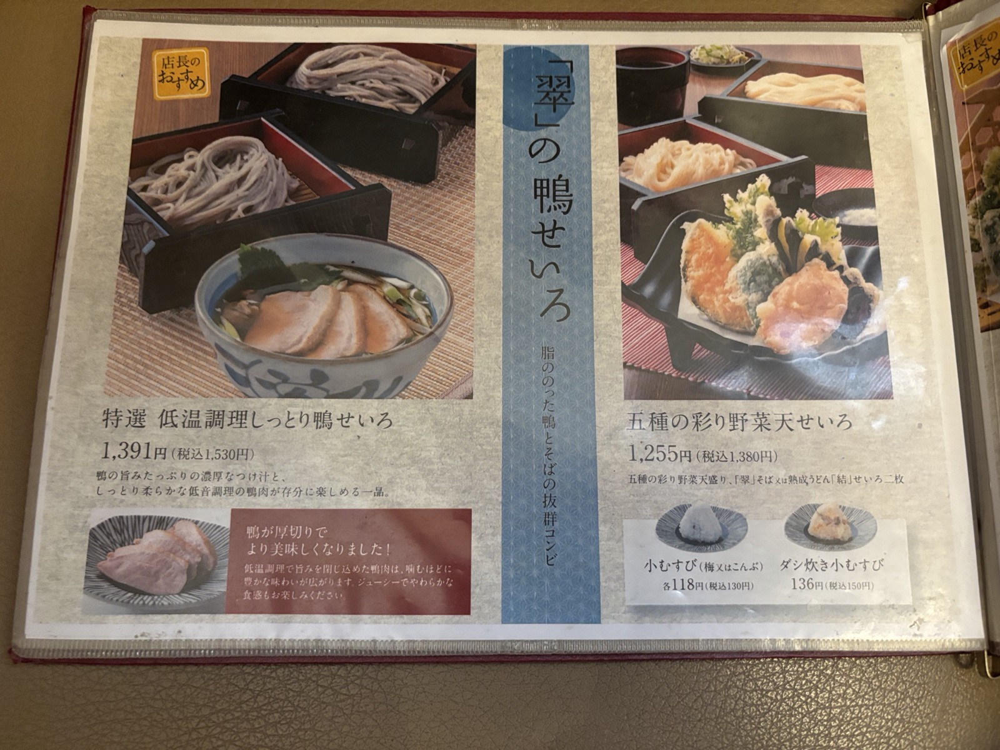
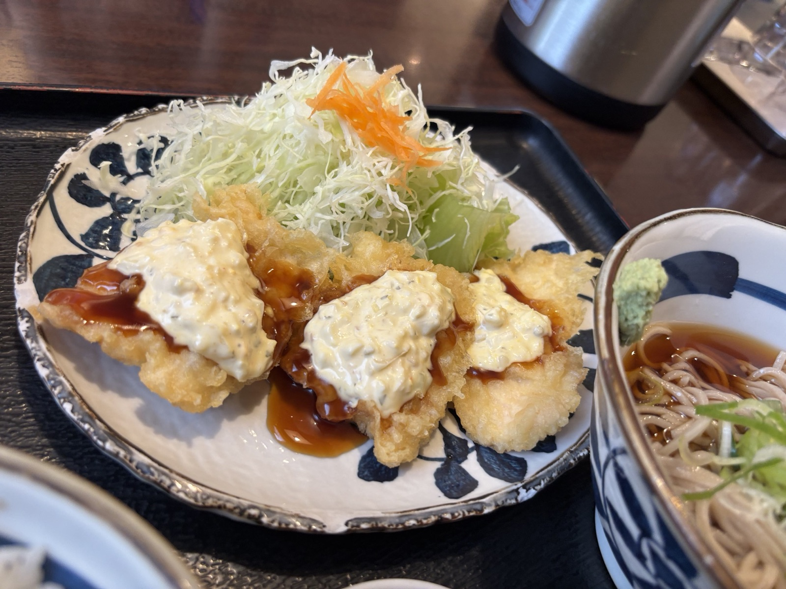
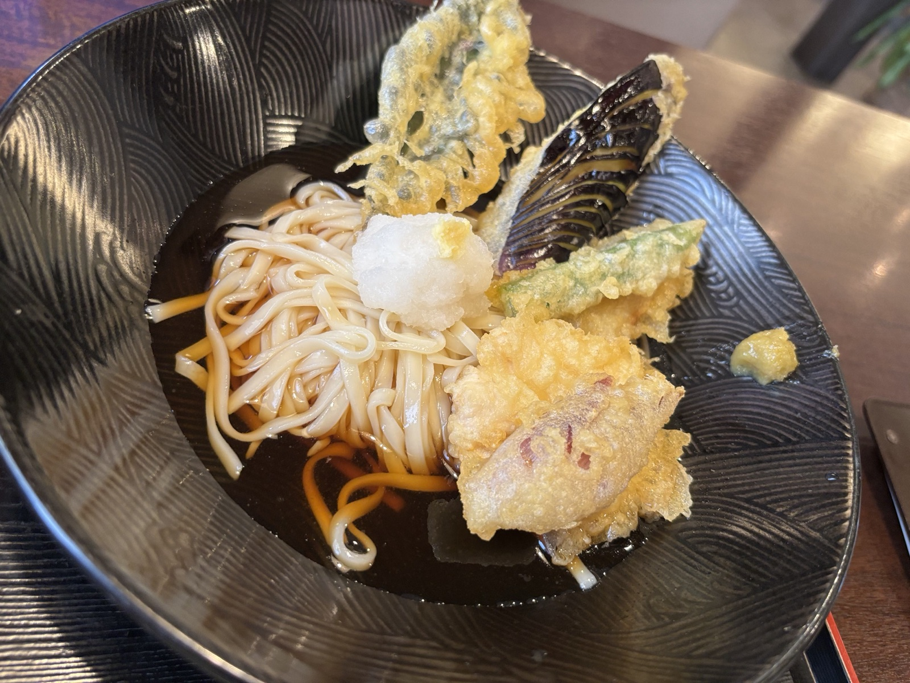
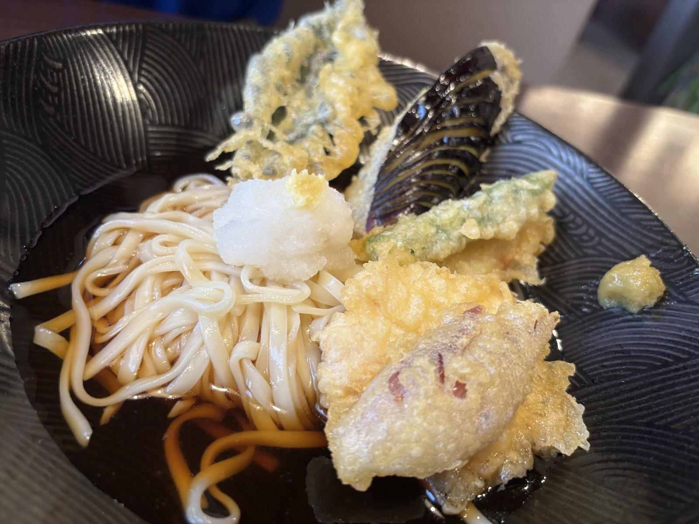

行ってきたシリーズ #08
めん房本陣 白山店
白山の伏流水で仕込む、こだわりの十割蕎麦と自然派熟成うどん。加賀の食材とじっくり向き合う一杯を。
白山の伏流水で仕込む、こだわりの十割蕎麦と自然派熟成うどん。加賀の食材とじっくり向き合う一杯を。
北海道産小麦を無添加・無着色でじっくり寝かせ、白山の伏流水で練り上げた自然派熟成うどん「結（ゆい）」。 そばの実を超粗挽きにし、噛むほどに広がる濃厚な香りとざらりとした食感に仕上げた「翠（すい）」。 麺はどちらもこだわりの逸品として、うどん・そば専門店ならではの一杯をご用意しております。
低温調理でしっとりと仕上げた鴨肉のせいろや、四種の薬味で楽しむ贅沢御膳など、季節ごとの創作つけ汁麺も充実。 白山店の落ち着いた店内で、素材と仕込みに手間を惜しまない一杯をごゆっくりお楽しみください。




| 名前 | めん房本陣 白山店 |
|---|---|
| 場所 | 〒924-0803 石川県白山市乾町90-1 |
| 営業時間 | 月〜金 11:00〜L.O.15:00／17:30〜L.O.21:00 土日祝 11:00〜L.O.21:00 |
| 公式サイト | menbo-honjin.com |
| @menbo_honjin_hakusan | |
| 食べログ | 食べログでみる |